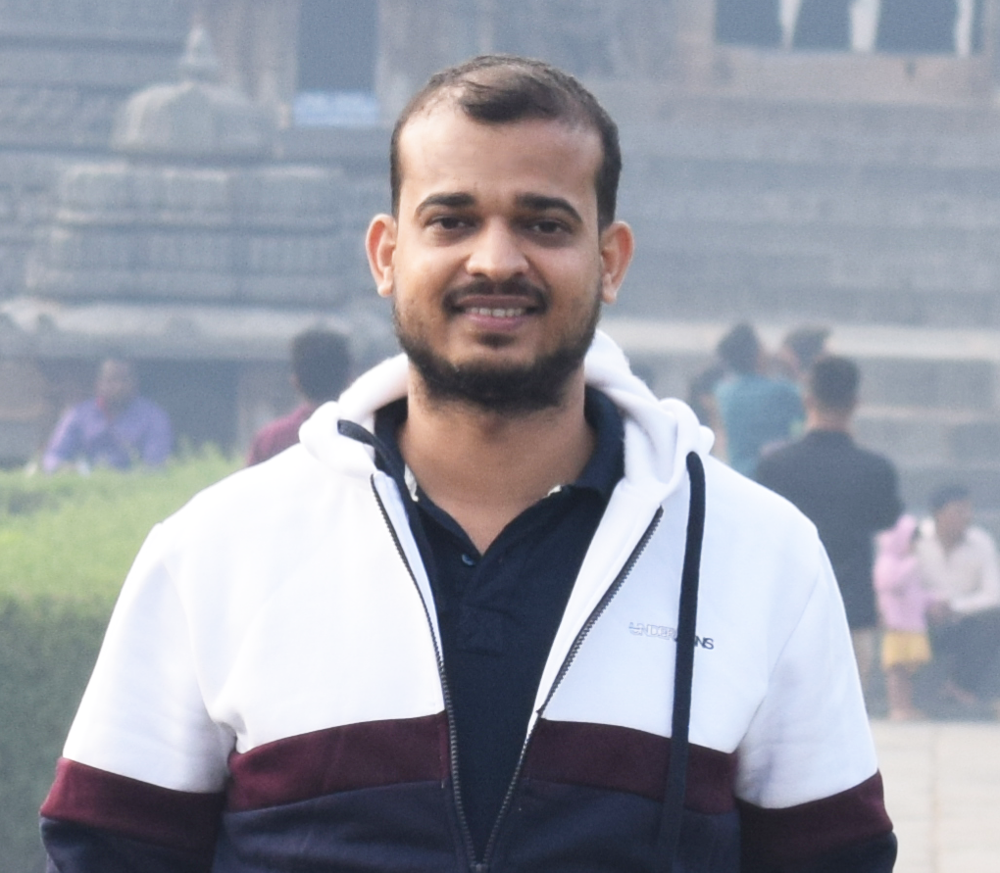

About Me

Hello! 👋 I am Samarjeet Das: a researcher with a PhD in Signal Processing and Machine Learning from IIT Guwahati. I am deeply intrigued by signals and passionate about leveraging machine learning and deep learning models to predict and classify future trends and patterns.
I am also interested in emerging paradigms like Agentic AI to build autonomous systems that can reason, adapt, and optimize complex processes.
+ From September 2025 - Now: I am an AI/ML Research Scientist at the ABB Corporate Research Center, Bengaluru (India).
Research Interests: - Application of Machine Learning and Deep Learning Models,
- Time-frequency Analysis of Non-stationary Signals, - Laser Weld Quality Monitoring, - Design and Development of Embedded Systems
Previous Affiliations
+ From March 2024 - August 2025: I was an AI/ML Research Engineer (GM R&D) at the
Tata Consultancy Services (TCS), Bengaluru (India).
+ From June 2023 - March 2024: I was a Research Assistant at the
Technology Innovation Hub, in the
Indian Institute of Technology, Guwahati (India).
+ From July 2017 - October 2023: I pursued a Ph.D. degree (Signal Processing and Machine Learning), from the
Indian Institute of Technology, Guwahati (India).
My Ph.D. thesis was titled
"Automated Diagnosis of Heart Valve Diseases From Phonocardiogram Signals Using Deep Learning".
I had my research denizen at the wonderful
Electro Medical Speech Technology (EMST) Lab, with the guidance of
Prof. Samarendra Dandapat.
+ From July 2015 - May 2017: I received a M.Tech degree (Mechatronics), from the
Indian Institute of Engineering Science and Technology, Shibpur (India).
My M.Tech thesis was titled
"Studies on Development of an Underwater Acoustic Pinger System for Source Localization".
I had my research habitat at the robotics and automation group,
CSIR-CMERI, Durgapur, with the guidance of Dr. Siva Ram Krishina Vadali, Principal Scientist.
+ From August 2011 - May 2015: I was a Lecturer (Department of ECE) at Einstein Academy of Technology and Management, Bhubaneswar.
+ From August 2007 - May 2011: I received a B.Tech degree (Applied Electronics and Instrumentation), from the
BPUT, Odisha, India.
A bit more information
GitHub-ID:
oksamar.
Google Scholar:
Click here.
Email-id: samarjeet025@gmail.com, samar176102005@iitg.ac.in
Courses Taken
Linear Algebra, Pattern Recognition and Machine Learning, Biomedical Signal Processing, Digital Signal Processing and Architecture,
Probability and Random Process, Mechatronics, Robotics, Embedded system, Micro-electromechanical Systems.
The above courses are the few I took during my M.Tech and Ph.D coursework.
Skills summary
Coding: Python, Matlab, SQL, C++; Documentation: Latex, Microsoft Word. Machine Learning: Theory and implementation of regression and classification models;
Platforms: Linux, Windows; Soft-skills: Critical thinking, Technical writing, Public speaking, Event management.